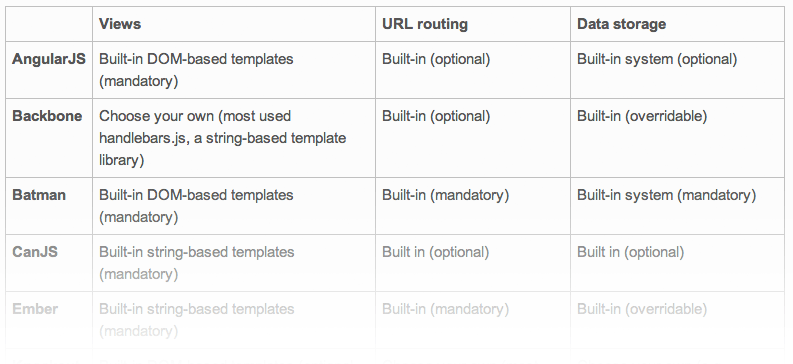

Overview: http://tinyurl.com/ToJS2012
Flat
Simple
Responsive apps
Mobile-first
Library composition
UI Templating
Reactive UIs
Web components
Dependency Management (RequireJS)
Package Management (NPM, Bower)
Testing (Jasmine, Siesta)
Automation (Grunt, PhantomJS)
Too narrow
Unidirectional
Too slow
Broad view of RIA and JS trends
Focus on front-end tools and technologies
Round up of the latest industry news
Short but deep dives into new tools and frameworks
More interaction and contribution
Hands-on, real world practice
Attract experts and external presenters
Includes, but not limited to, Sencha stuff
Austin JavaScript
JavaScript Austin
Austin Web Architecture
Refresh Austin
etc.
/
#